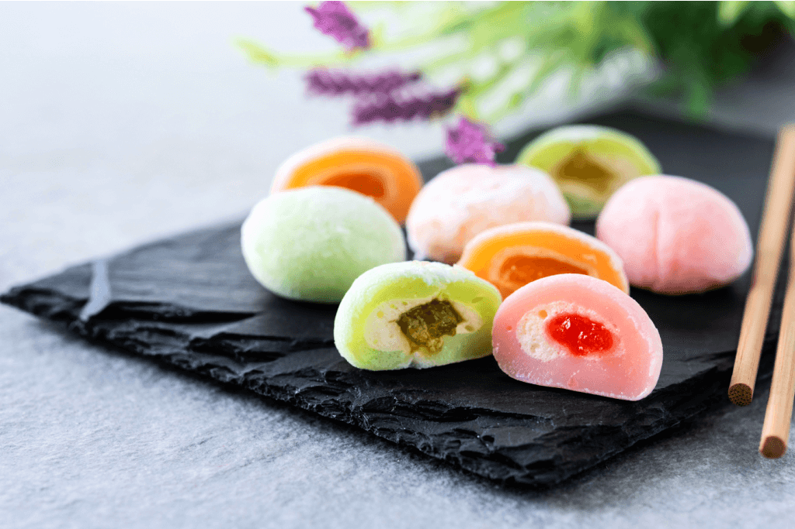

Mochis aux fruits

Description
Mochi (prononcé MOE-chee) est un dessert japonais à base de farine de riz gluant sucré ou mochigome.
La pâte à mochi est souvent teintée avec de la poudre de thé vert (matcha) ou d'autres colorants alimentaires et enroulée autour d'un centre sucré pour former une petite confiserie de la taille d'une bouchée avec une texture moelleuse, lisse et élastique.
Dans sa forme traditionnelle, ce type de Mochi est rempli de pâte de haricots rouges sucrée, mais dans une version plus modernisée, la pâte de mochi de couleur pastel est enroulée autour de mini boules de glace pour créer certaines des plus belles friandises glacées de la ville.
Les saveurs incluent le chocolat, la vanille, la fraise, la mangue, le café, le thé vert et le litchi sucré.
List des ingrédients
- 100g de farine de riz gluant Cock
- environ 20g de farine de riz gluant à faire cuire
- 30g de maïzena
- 180 ml de lait
- 50g de sucre
- 20g de beurre
- Un peu d'eau tiède
- 250g de crème fraîche liquide (avec au moins 30% de M.G)
- Quelques morceaux de fruits de saison
Préparation
- Dans un bol, bien mélanger la farine de riz gluant, la maïzena, le lait, le sucre et le beurre fondu. Diluer le mélange avec un peu d'eau pour obtenir une consistance pâteuse.
- Cuire le tout à la vapeur à feu vif jusqu'à solidification de la pâte puis laisser refroidir.
- Dans une poêle, faire revenir environ 20 g de farine de riz gluant.
- Monter la crème en chantilly et couper les fruits de saison en morceaux.
- Préparer des petits cercles étalés avec la pâte cuite et placer au centre la chantilly et les fruits en morceaux. Refermer le tout pour former des boules de mochi puis les étaler dans de la poudre de farine de riz gluant préalablement cuite.
Bonne dégustation !
Main page